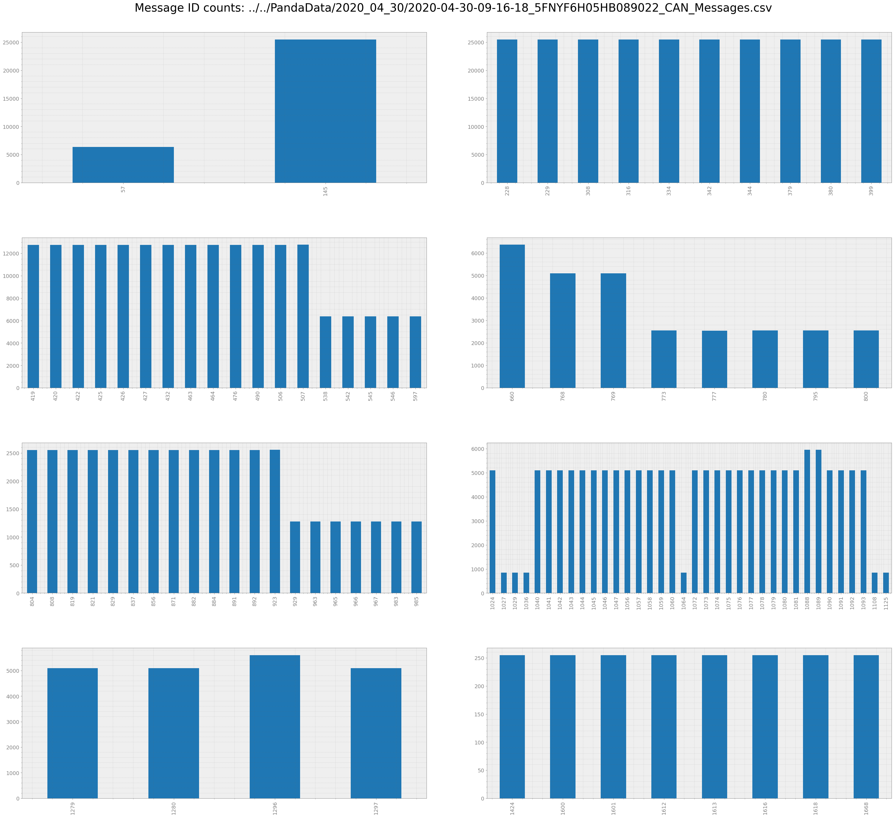
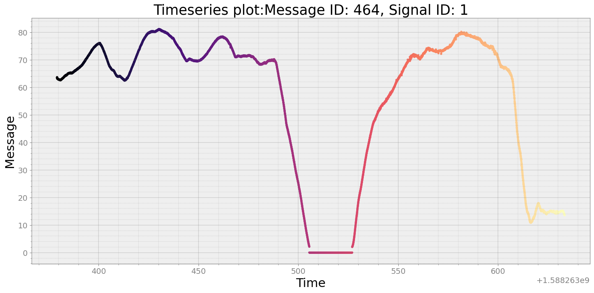
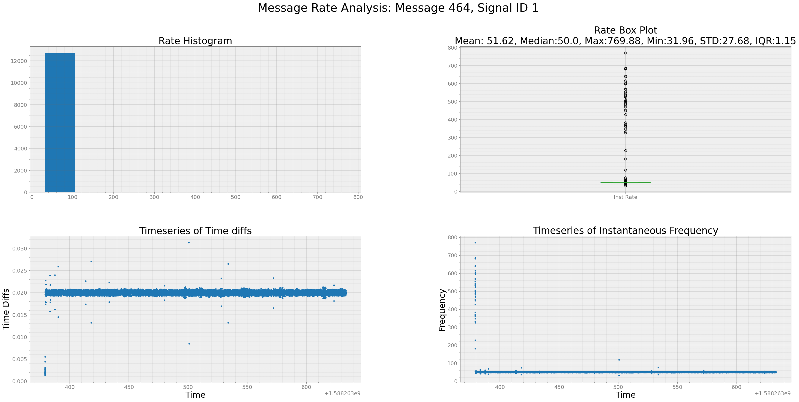
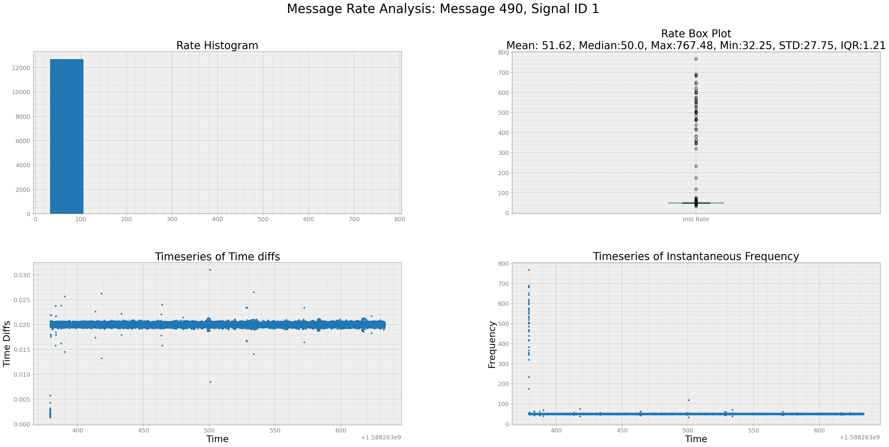
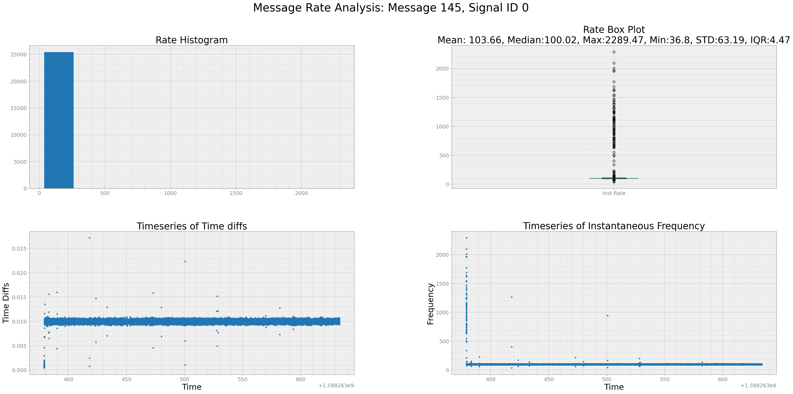
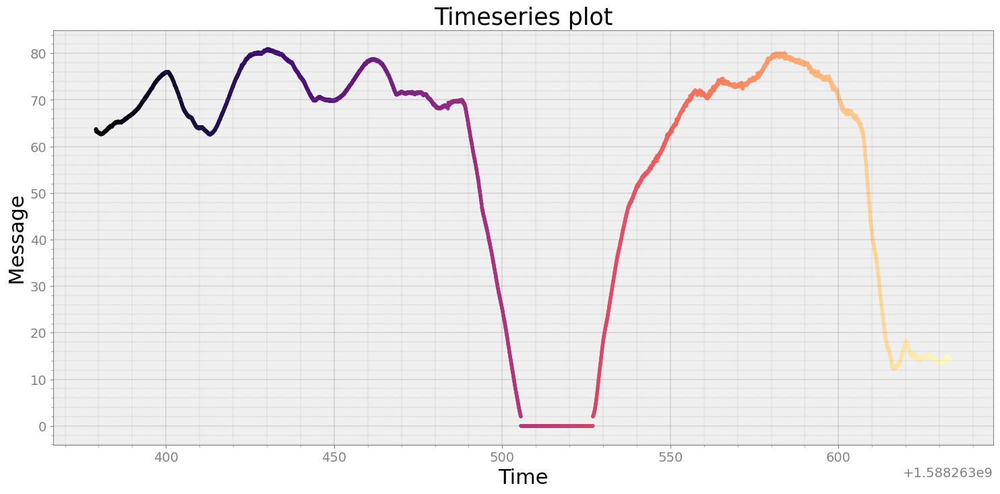
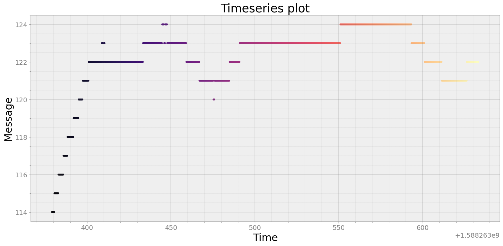
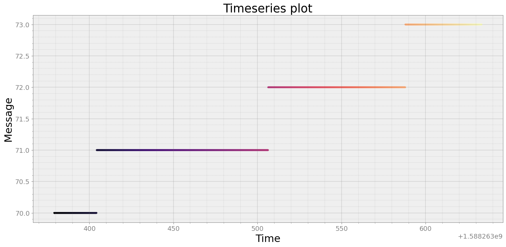
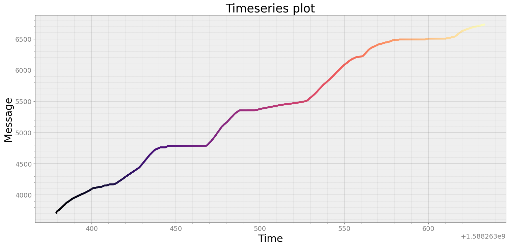
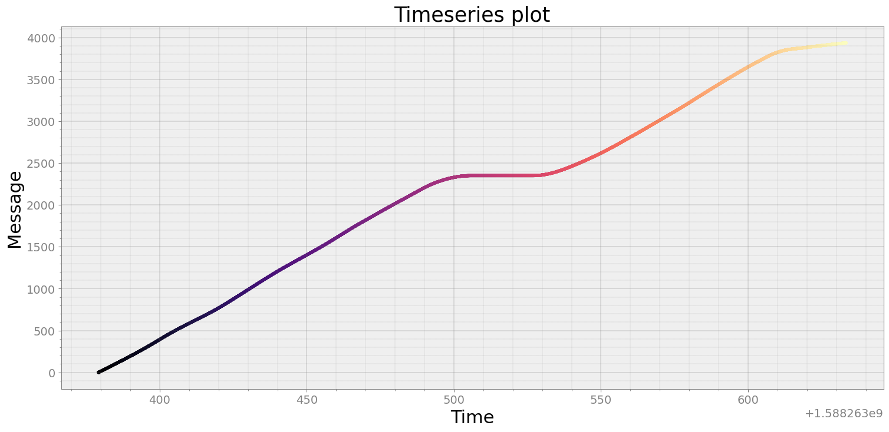

Data Throughput of Honda Pilot Data¶
[1]:
from strym import strymread
import strym
import matplotlib.pyplot as plt
import numpy as np
import seaborn as sea
/home/ivory/anaconda3/envs/dbn/lib/python3.7/site-packages/statsmodels/tools/_testing.py:19: FutureWarning: pandas.util.testing is deprecated. Use the functions in the public API at pandas.testing instead.
import pandas.util.testing as tm
[2]:
data = "../../PandaData/2020_04_30/2020-04-30-09-16-18_5FNYF6H05HB089022_CAN_Messages.csv"
dbcfile= "../examples/honda_pilot_touring_2017_can_generated.dbc"
[3]:
r = strymread(csvfile=data, dbcfile=dbcfile)
[4]:
r.count(plot = True)

[4]:
| MessageID | Counts_Bus_0 | Counts_Bus_1 | TotalCount | |
|---|---|---|---|---|
| 57 | 57 | 6374 | 0 | 6374 |
| 145 | 145 | 25496 | 0 | 25496 |
| 228 | 228 | 25495 | 0 | 25495 |
| 229 | 229 | 25496 | 0 | 25496 |
| 308 | 308 | 25496 | 0 | 25496 |
| ... | ... | ... | ... | ... |
| 1612 | 1612 | 255 | 0 | 255 |
| 1613 | 1613 | 255 | 0 | 255 |
| 1616 | 1616 | 255 | 0 | 255 |
| 1618 | 1618 | 255 | 0 | 255 |
| 1668 | 1668 | 255 | 0 | 255 |
106 rows × 4 columns
[5]:
r.frequency()
[5]:
| MessageID | MeanRate | MedianRate | RateStd | MaxRate | MinRate | RateIQR | |
|---|---|---|---|---|---|---|---|
| 0 | 57 | 25.745966 | 25.000024 | 12.872444 | 329.300777 | 23.903527 | 0.248166 |
| 1 | 145 | 103.658655 | 100.019173 | 63.189448 | 2289.467249 | 36.796982 | 4.471483 |
| 2 | 228 | 103.991301 | 100.009633 | 69.621096 | 2872.810959 | 32.283992 | 4.390886 |
| 3 | 229 | 104.128671 | 99.978642 | 73.554050 | 2493.640904 | 32.460136 | 4.482534 |
| 4 | 308 | 104.177729 | 99.981025 | 74.794076 | 3095.427306 | 32.408719 | 4.246725 |
| ... | ... | ... | ... | ... | ... | ... | ... |
| 101 | 1612 | 1.000403 | 1.000039 | 0.005487 | 1.087484 | 0.998178 | 0.000392 |
| 102 | 1613 | 1.000725 | 1.000012 | 0.011486 | 1.183240 | 0.996545 | 0.000510 |
| 103 | 1616 | 1.000811 | 1.000080 | 0.012512 | 1.198342 | 0.995939 | 0.002005 |
| 104 | 1618 | 1.001128 | 0.999994 | 0.017985 | 1.287079 | 0.997487 | 0.000519 |
| 105 | 1668 | 1.003400 | 1.001523 | 0.027873 | 1.446203 | 0.998711 | 0.001350 |
106 rows × 7 columns
Let’s look at a few Messages¶
[6]:
msgs464_1 = r.get_ts(464,1)
[7]:
msgs464_1
[7]:
| Time | Message | Bus | |
|---|---|---|---|
| Clock | |||
| 2020-04-30 16:16:19.191863060 | 1.588263e+09 | 63.35 | 0.0 |
| 2020-04-30 16:16:19.193773985 | 1.588263e+09 | 63.33 | 0.0 |
| 2020-04-30 16:16:19.196507931 | 1.588263e+09 | 63.47 | 0.0 |
| 2020-04-30 16:16:19.198184013 | 1.588263e+09 | 63.54 | 0.0 |
| 2020-04-30 16:16:19.200067997 | 1.588263e+09 | 63.56 | 0.0 |
| ... | ... | ... | ... |
| 2020-04-30 16:20:33.233618975 | 1.588264e+09 | 13.64 | 0.0 |
| 2020-04-30 16:20:33.253679991 | 1.588264e+09 | 13.70 | 0.0 |
| 2020-04-30 16:20:33.274065018 | 1.588264e+09 | 13.74 | 0.0 |
| 2020-04-30 16:20:33.293877840 | 1.588264e+09 | 13.62 | 0.0 |
| 2020-04-30 16:20:33.314265013 | 1.588264e+09 | 13.56 | 0.0 |
12748 rows × 3 columns
[8]:
strymread.plt_ts(msgs464_1, title = "Message ID: 464, Signal ID: 1")

[9]:
strymread.ranalyze(msgs464_1, title="Message 464, Signal ID 1")
Analyzing Timestamp and Data Rate of Message 464, Signal ID 1
Interquartile Range of Rate for Message 464, Signal ID 1 is 1.148635679815989

[10]:
msgs490_1 = r.get_ts(490,1)
strymread.ranalyze(msgs490_1, title="Message 490, Signal ID 1")
Analyzing Timestamp and Data Rate of Message 490, Signal ID 1
Interquartile Range of Rate for Message 490, Signal ID 1 is 1.2079413490941846

[11]:
msgs145_0 = r.get_ts(145,0)
strymread.ranalyze(msgs145_0, title="Message 145, Signal ID 0")
Analyzing Timestamp and Data Rate of Message 145, Signal ID 0
Interquartile Range of Rate for Message 145, Signal ID 0 is 4.47148348251315

[12]:
msgs464_0 = r.get_ts(464,0)
strymread.plt_ts(msgs464_0)

[13]:
msgs464_1 = r.get_ts(464,1)
strymread.plt_ts(msgs464_1)
[14]:
msgs464_2 = r.get_ts(464,2)
strymread.plt_ts(msgs464_2)
[15]:
msgs464_3 = r.get_ts(464,3)
strymread.plt_ts(msgs464_3)
[16]:
msgs804_1 = r.get_ts(804,0)
strymread.plt_ts(msgs804_1)

[17]:
msgs804_0 = r.get_ts(804,0)
strymread.plt_ts(msgs804_0)

[18]:
msgs804_1 = r.get_ts(804,1)
strymread.plt_ts(msgs804_1)

[19]:
msgs804_2 = r.get_ts(804,2)
strymread.plt_ts(msgs804_2)

[20]:
msgs464_0
[20]:
| Time | Message | Bus | |
|---|---|---|---|
| Clock | |||
| 2020-04-30 16:16:19.191863060 | 1.588263e+09 | 63.54 | 0.0 |
| 2020-04-30 16:16:19.193773985 | 1.588263e+09 | 63.56 | 0.0 |
| 2020-04-30 16:16:19.196507931 | 1.588263e+09 | 63.65 | 0.0 |
| 2020-04-30 16:16:19.198184013 | 1.588263e+09 | 63.63 | 0.0 |
| 2020-04-30 16:16:19.200067997 | 1.588263e+09 | 63.68 | 0.0 |
| ... | ... | ... | ... |
| 2020-04-30 16:20:33.233618975 | 1.588264e+09 | 14.22 | 0.0 |
| 2020-04-30 16:20:33.253679991 | 1.588264e+09 | 14.17 | 0.0 |
| 2020-04-30 16:20:33.274065018 | 1.588264e+09 | 14.26 | 0.0 |
| 2020-04-30 16:20:33.293877840 | 1.588264e+09 | 14.29 | 0.0 |
| 2020-04-30 16:20:33.314265013 | 1.588264e+09 | 13.99 | 0.0 |
12748 rows × 3 columns
[21]:
msgs464_0['Message'] = msgs464_0['Message']*1000.0/3600.0
distance = strymread.integrate(msgs464_0)
[22]:
msgs464_0
[22]:
| Time | Message | Bus | |
|---|---|---|---|
| Clock | |||
| 2020-04-30 16:16:19.191863060 | 1.588263e+09 | 17.650000 | 0.0 |
| 2020-04-30 16:16:19.193773985 | 1.588263e+09 | 17.655556 | 0.0 |
| 2020-04-30 16:16:19.196507931 | 1.588263e+09 | 17.680556 | 0.0 |
| 2020-04-30 16:16:19.198184013 | 1.588263e+09 | 17.675000 | 0.0 |
| 2020-04-30 16:16:19.200067997 | 1.588263e+09 | 17.688889 | 0.0 |
| ... | ... | ... | ... |
| 2020-04-30 16:20:33.233618975 | 1.588264e+09 | 3.950000 | 0.0 |
| 2020-04-30 16:20:33.253679991 | 1.588264e+09 | 3.936111 | 0.0 |
| 2020-04-30 16:20:33.274065018 | 1.588264e+09 | 3.961111 | 0.0 |
| 2020-04-30 16:20:33.293877840 | 1.588264e+09 | 3.969444 | 0.0 |
| 2020-04-30 16:20:33.314265013 | 1.588264e+09 | 3.886111 | 0.0 |
12748 rows × 3 columns
[23]:
strymread.plt_ts(distance)
